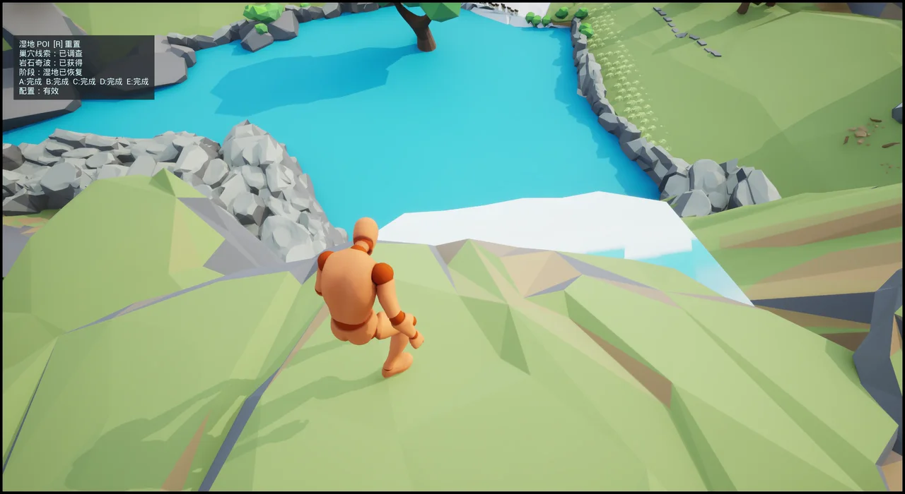
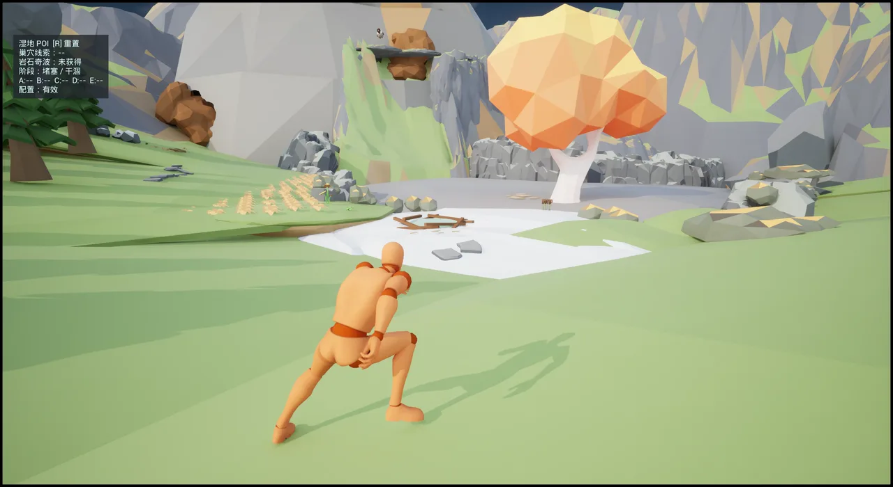
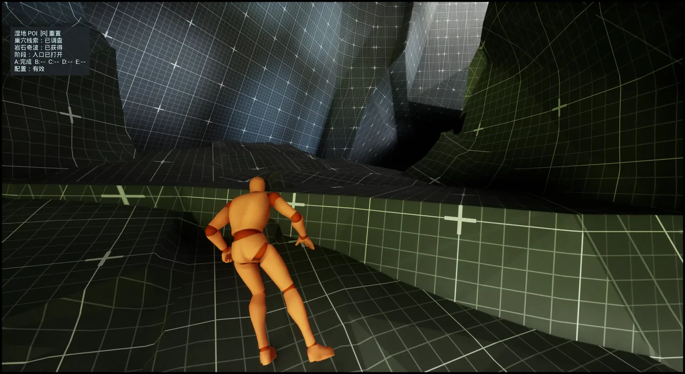
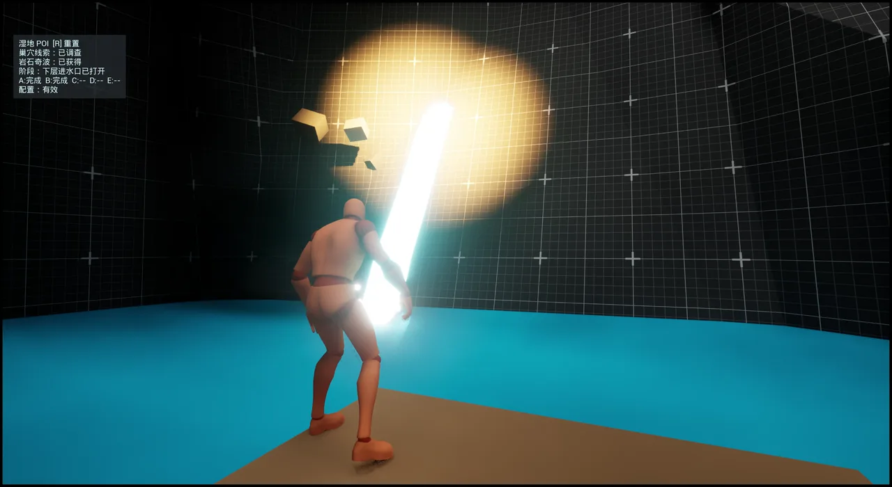
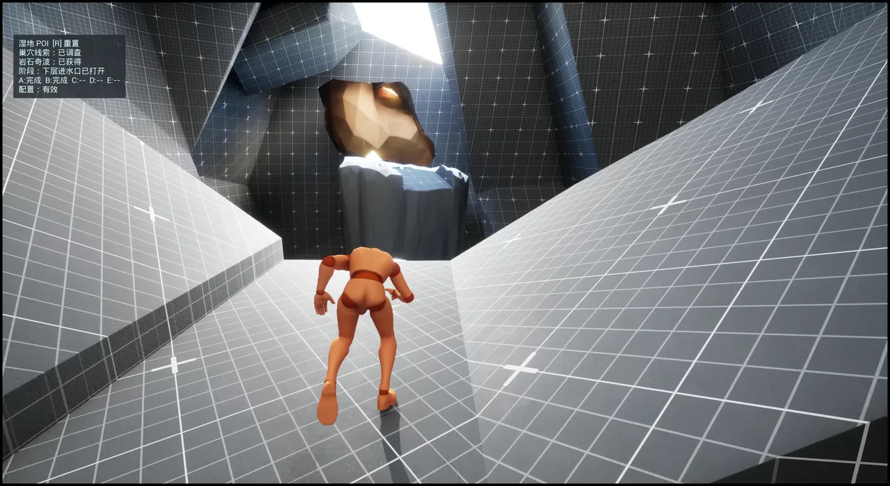
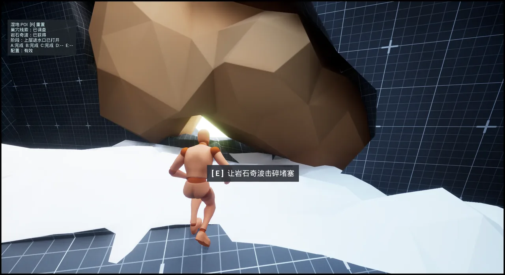

涨水直接改变可达空间
两级水位把同一破岩能力转化为抬板、游路和向上推进。
UE 5.5 WHITEBOX · PERSONAL PORTFOLIO · 2026.07.30
玩家先在干涸湿地看到废弃巢穴和奇波留下的痕迹。找到岩石奇波后，连续打通 A–E 五处堵点：开洞口、抬高两个水池、放出山里的积水、恢复山下湿地。最后可以借滑翔鸟回到起点， 看到重新出现的水獭。


00 / DRY 同一盆地，初始状态看到干涸湿地
找到岩石奇波
打通堵点
水系连通
生物回归
01 / PLAYABLE EVIDENCE
点击右侧章节可以直接跳到对应位置。视频播放时，当前步骤和下方水位会一起变化。 左上角保留了 Debug 信息，方便核对 A–E 做到了哪一步。
00:00 刚到湿地
原速实机 · 无旁白 · 章节时间来自 2026-07-30 录屏
02 / SPATIAL GRAMMAR
玩家只需要使用岩石奇波的破岩能力。同一个行为作用于相似的岩层堵点， 会让环境产生不同变化：打开洞口、抬高水位、改变路线，最终重新连通湿地水系。
SPATIAL PROOF
纵剖面叠加玩家路线、水位变化与滑翔回程，用来说明高差如何改变可达性， 以及终点如何把玩家带回最初的问题现场；图中不代表最终地形比例。
两级水位把同一破岩能力转化为抬板、游路和向上推进。
玩家离开洞穴时重新看到最初的盆地，并在眼前完成湿地恢复。
滑翔缩短返程，也让同一地点完成干涸与恢复的前后对照。

第一次破岩只负责打开洞口，玩家带着刚学会的能力进入内部水路。

破岩触发低池进水，木板随后升高，把玩家送到上一层。

低池打开上层路线；C 完成后，高池把原本够不到的出口变成一段游路。

高池把玩家送到出口前。破岩后离开洞穴，再看一次最开始的干涸盆地。
最终堵点解除后，水、植物和动物依次回来，玩家能看到自己做成了什么。
DESIGN LOGIC
关卡建立一条简单的世界规律：岩石堵住旧水路，岩石奇波可以让水重新流动。 A–E 用五次环境变化反复验证这条规律。
干涸巢穴、旧水路和堵塞岩石先摆在玩家眼前。
岩石奇波为这些堵点提供明确解法。
每次破岩都会改变水路或可达空间，让玩家继续往前。
栖息地恢复，生物自然回归，明确验证玩家的判断。
03 / EXPERIENCE TARGET
玩家先从干涸巢穴、旧水路和堵塞岩层中读出“这里曾经有水”。 随着水系重新连通，植物、动物与奇波自然回到适合它们的栖息地；滑翔返程让前后状态在同一地点完成对照。